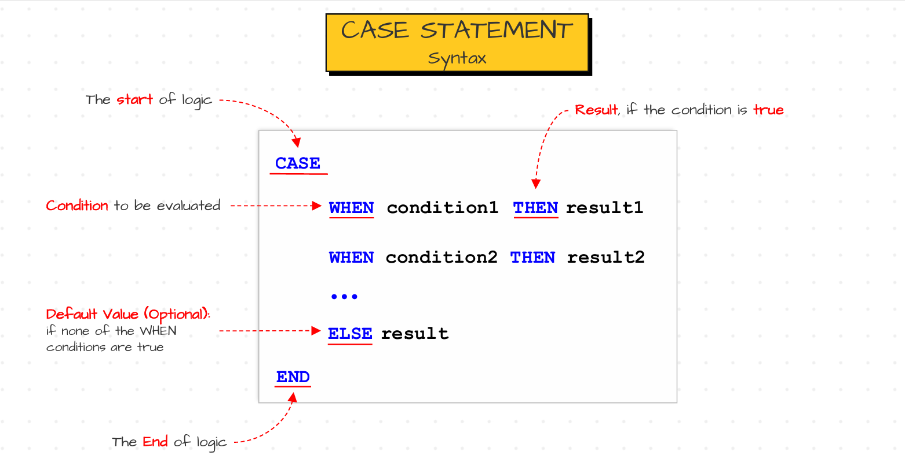
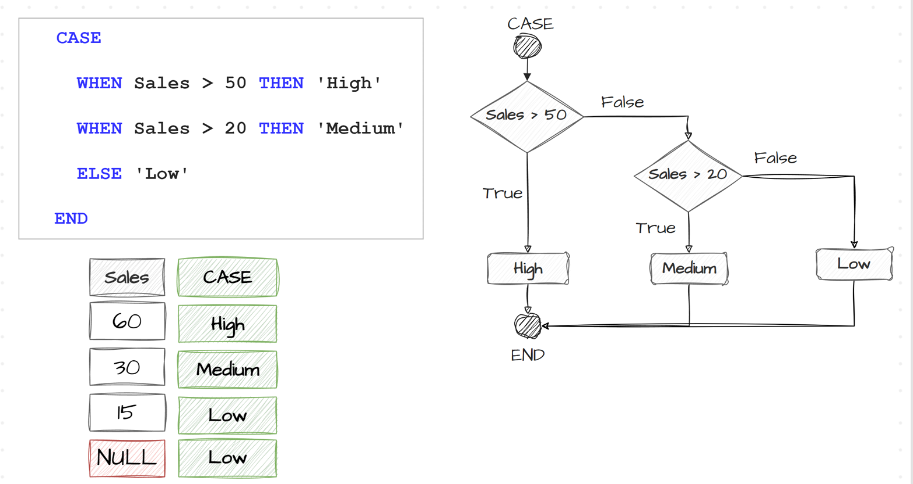

CASE WHEN Statement#
Introduction to CASE WHEN Statement#
CASE WHEN Statement introduces a conditional logic to SQL which produces results based on particular conditions met. It evaluate all the conditions and returns corresponding value when first condition met. This conditional logic starts with keyword called
CASEand end with a keyword calledEND. In between these two keywords we writes our conditional logic using WHEN THEN and ELSE keywords. The syntax of CASE WHEN is shown in the following image.
CASE WHEN StatementSo sql starts checking the condition1 first, if that condition is true then it gives result1 as output and never checks remaining conditions. If the condition1 is false then moves to next condition which is condition2. If condition2 is true then gives result2 as output. If condition2 is also false then it goes on checking the remaining conditions and if any condition returns true then it gives corresponding result as output. If none of the conditions are true then it gives default value mentioned in the else block as output. But If we didn’t mention the else block then it returns NULL.
Consider the following example shown in the image. Here it first checks whether sales > 50 or not. If sales > 50 then it returns
Highas output. Otherwise it checks 2nd condition whether sales > 20 or not. If sales > 20 then it returnsMediumas output. If both conditions are false then it would returnLowas output which is coming from ELSE block.
CASE WHEN Statement ExampleNote : The Data Type of the resultant given by all conditions must be same. That means in all results mentioned after THEN keyword must be of same data type including default value mentioned in ELSE.
Use Cases of CASE WHEN Statement#
CASE WHEN Statement is mainly used to do data transformation by which we can derive new information without modifying original source data. This means we create new columns based on existing data which are generally used to peform analytical tasks and generate reports based on these new columns.
Categorizing Data : Categorizing the Data is one of the main data trnasformation use case. Categorizing the data is nothing but grouping the data into different categories based on certian conditions. We mainly categorize the data to do data aggregations by using that new category and generate reports on top of that grouped category.
Ex : Create a report showing total sales for each of the following categories. High (sales over 50), Medium (Sales between 21-50), and Low (sales 20 or less). And sort the categories from highest sales to lowest.
SELECT Categroy, SUM(Sales) as TotalSales, FROM ( SELECT OrderID, Sales, CASE WHEN Sales > 50 THEN 'High' WHEN Sales > 20 THEN 'Meduim' ELSE 'Low' END as Category FROM Sales.Orders ) as t GROUP BY Category Order BY TotalSales DESC
Data Mapping : Data Mapping is anothor use case of CASE WHEN Statement where we actually Maps the old data to new data which we can be effictively used for analysis and increases the readability also. For example most of the ETL developers stores the data in form of code to optimize the storage. Suppose if you consider the status of the order such as placed, shipped, delivered, they won’t store them as it is. Instead they store them as 0, 1, 2 indicating 0 as order placed, 1 as shipped, and 2 as Delivered. This way of encoding optimize the storage and performance. But we cannot use them in our reporting. So we have to map these codes with respecive terms for reporting. So we use CASE-WHEN Statement to do this. Similary it is used in Mapping the full country names with abbrivated names or Convert geneder codes to orignal gender name to improve the readability.
Ex : Convert the country names to their resoective abbrevated codes to remove the extra space occupied by the full country names in reports.
SELECT CustomerID, firstname, lastname, CASE WHEN country = "Germany" THEN 'DE' WHEN country = "USA" THEN 'US' ELSE 'N/A' END as CountryAbbr FROM Sales.Customers
We can write these case statement like below if all conditions involve same column and comparing using equal sign.
SELECT CustomerID, firstname, lastname, CASE country WHEN "Germany" THEN 'DE' WHEN "USA" THEN 'US' ELSE "N/A" END
Handling NULLs : We can handle NULL values by using CASE - WHEN Statement. By using CASE WHEN statement we can substitute NULLs with any static values before performing aggregations on columns invoving NULL Values.
Ex : Find the averge score of each customer in customers table.
SELECT AVG( CASE WHEN Score IS NULL THEN 0 ELSE Score ) as AvgScore FROM Sales.Customers
Conditional Aggregations : CASE - WHEN Statements can be used in scenarios of Conditional Aggregations also. Conditional Aggregations mean applying aggregate functions on subset of data to fulfil certain conditions. This can be understood by below example.
Ex : Count how many times each customer has made an order with sales greater than 30. Here first i wanna create a new variable called flag which indicates orders with sales greater than 30 as 1 and else 0. Now iam counting these flag group by upon customerID to get how many orders that each customer placed with sales > 30. to create that flag we use CASE - WHEN statement.
SELECT CustomerID, SUM( CASE WHEN Sales > 30 THEN 1 ELSE 0 END ) as TotalOrderHighSales, COUNT(*) as TotalOrders FROM Sales.Orders GROUP BY CustomerID